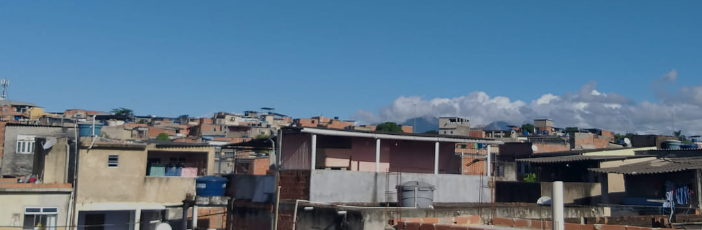
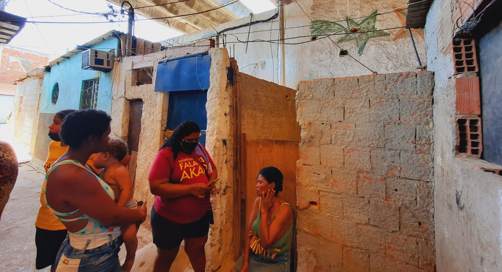
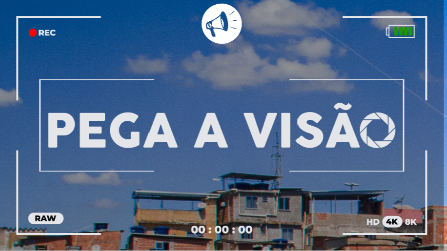
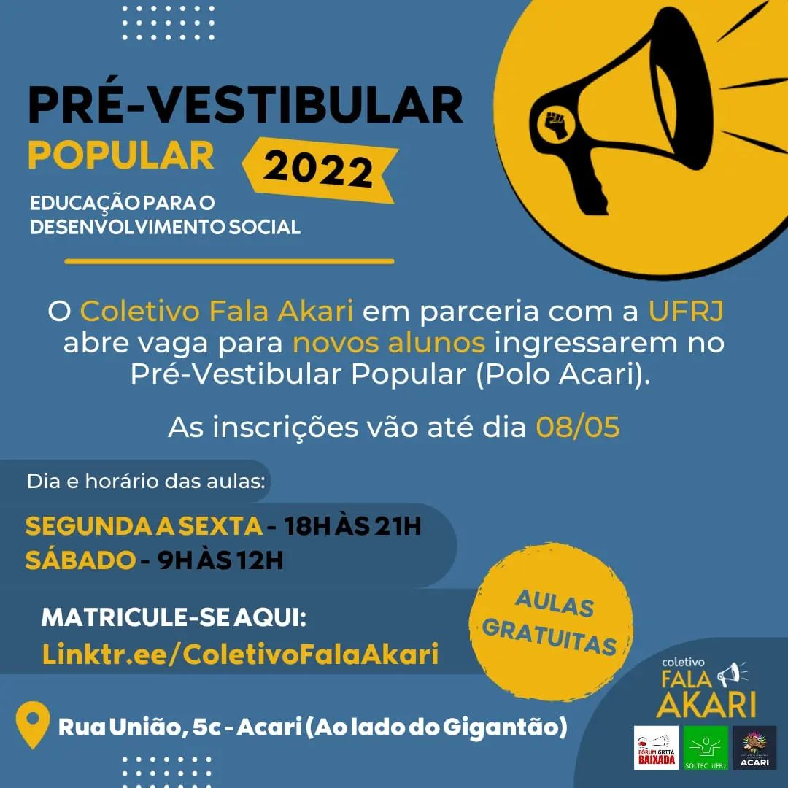
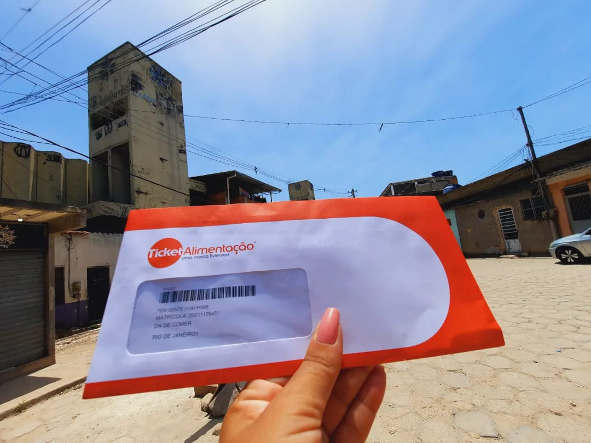

Quem Somos
Surgido em 2015, o Coletivo Fala Akari é um grupo auto-organizado e independente de moradores do Complexo de Acari no Rio de Janeiro - RJ. Seu objetivo principal é a luta pela defesa dos direitos humanos para a população favelada e periférica, além da construção de uma comunicação comunitária que represente as diversas perspectivas marginalizadas.

Conheça nossos projetos

Pega a visão
O projeto Pega a Visão é um curso de audiovisual gratuito, antirracista e afrocentrado que conta com aulas práticas e teóricas para produzir comunicadores comunitários de favela.

Pré-Vestibular Popular
O Pré-vestibular Popular Educação para o Desenvolvimento Social (PVP) é um projeto de extensão da UFRJ desenvolvido em parceria com o Coletivo Fala Akari e a Associação de Moradores de Acari.

Gestarte
Criado em 2021 por Flávia Casciano, mãe, moradora da favela do Acari, doula e educadora perinatal, o Gestarte tem como eixos centrais direitos reprodutivos, humanização do parto, bem-estar da gestante e da criança.
Suas ações objetivam a disseminação de informação sobre o universo gestacional pelo ponto de vista cultural, ampliando o olhar que, geralmente, é dado exclusivamente sob a ótica da saúde e dos direitos humanos.
@gestarte.acari

Ações durante a pandemia
Milhares de pessoas foram diretamente impactadas pelas nossas ações de combate à covid-19 no nosso Complexo de Acari e também fora.
Entre quentinhas, tickets alimentação, máscaras, álcool em gel, kits de limpeza e kits infantis, mais de 7 mil moradores foram beneficiados pela #FrenteComplexodeAcariContraACovid.
Como doar
Você pode apoiar o coletivo realizando uma doação por Pix ou PayPal

bruuna.aguiar@hotmail.com